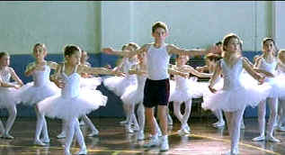

| Billy Elliot/B+,B+ |
| Universal/2000/111/ANA 1.85 |
Billy Elliot soars under the passionate feet of its title character. Young Billy, growing up the son of a coal mining family, can't contain his excitement for dance. Billy comes to life jumping to the beat of his older brother's rock cassettes. Billy's life turns around when the local boxing club of which he;s a member allows a ballet class to share its gym space. Billy can't take his eyes off the lasses in tutus and it doesn't take more than one solid punch to his nioggin to send Billy surreptiitously on his toes to the middle of the dancing girls.
 |
| Billy gets in the swing of things. ©Universal |
Paralleling Billy's march to his own beat is a minor's strike that adds
a rather large helping of social commentary to the otherwise very upbeat story. Billy Elliot
is best when it sticks to the young man's entrancement by dance and the conflicting feelings of
family. There are some touching moments explored with Billy's grandmother and more explosive
father/son confrontations. The script even mixes a touch of childhood romance into the pot.
The camera loves Jamie Bell. The young Brit displays an abundance of charm and
poise as Billy. And, man, when the kid is expressing his emotions through dance, Billy Elliot
becomes mesmerizing. Julie Waters adds a splash of sass as dance teacher Mrs. Wilkinson. Her
one,two,threes are spit out with feisty style. Gary Lewis gives a terrific perfromance as Billy's
Dad. Lewis assays a complex range of emotions while staying within his character.
The movie business continues to make successful raids on the British
theater establishment. Stephen Daldry makes an auspicious debut with Billy Elliot. It's a
spirited directing job filled with energy and a keen understanding of the material.
The DVD transfer for Billy Elliot looks as natural as Billy's dance
steps. The color is rich and accurate. It's got one of the best Heinz Ketchup bottles I have
ever seen on DVD. The image is consistently sharp with fine detail in focus. Night scenes sparkle
with deep blacks and excellent shadow detail. The cold reality of the strike torn coal town and the
warm, energized look of the gym cum dance studio are perfectly captured. The pop music that drives
Billy's feet to life pack plenty of energy onto the Dolby Digital 5:1 surround sound track. Some of
the accents are a bit tough to understand at times, but it's no fault of the clear, clean dialogue
delivery.

Selections from the feature archive include articles on Akira Kurosawa,
Frank Darabont, Blonde Bimbos, Hollywood
Street Gangs, or Vietnam:
The Hollywood Pariah, and many more....
Gotta
Dance
Fred and Ginger tapped their way into the hearts of movie fans everywhere. Stu Kobak takes a look at some of those
dance movies that gifted audiences toe-tapping pleasure. Click on the image to get in on the beat.

 Have you visited Home Theater
Talk lately? One of the friendliest places on the Net for Home Theater and DVD discussion, you
can get help for installation problems or simply share your opinions with other Vidiots.
Have you visited Home Theater
Talk lately? One of the friendliest places on the Net for Home Theater and DVD discussion, you
can get help for installation problems or simply share your opinions with other Vidiots.

ISF Monitor Calibrations in the
Tristate New York area. Lots of hardware info and frequent hardware peaks from video expert Kevin
Miller.They may be judgmental, but that's the point, isn't it. Lots of DVD reviews plus news and
more.
MRQE
Find reams of movie and DVD reviews at the Movie Review
Query Engine, a index of reviews appearing on the Internet.

Information on film sound in theaters and home theaters. Lots of helpful information provided in a
handsome interface.

The home of John Tisch's invaluable Poster Price Almanac. Every serious poster collector
uses the Almanac as a reference.